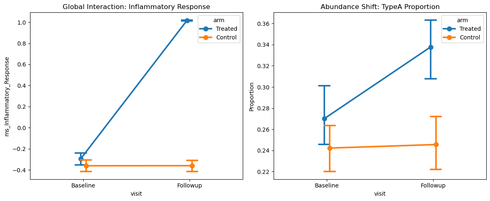
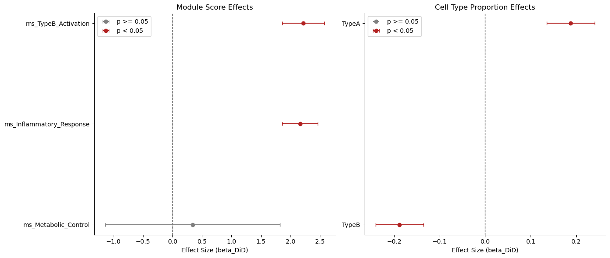
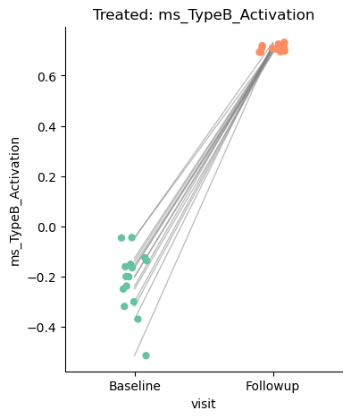
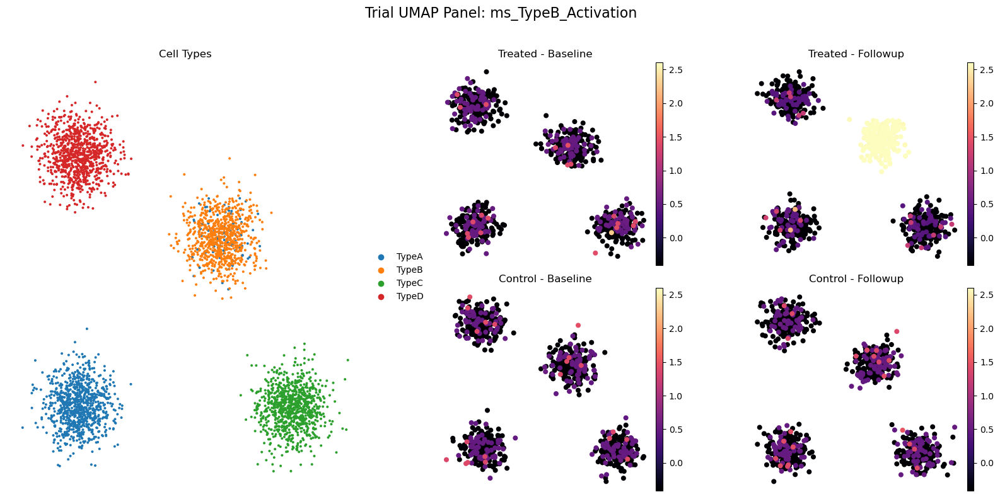
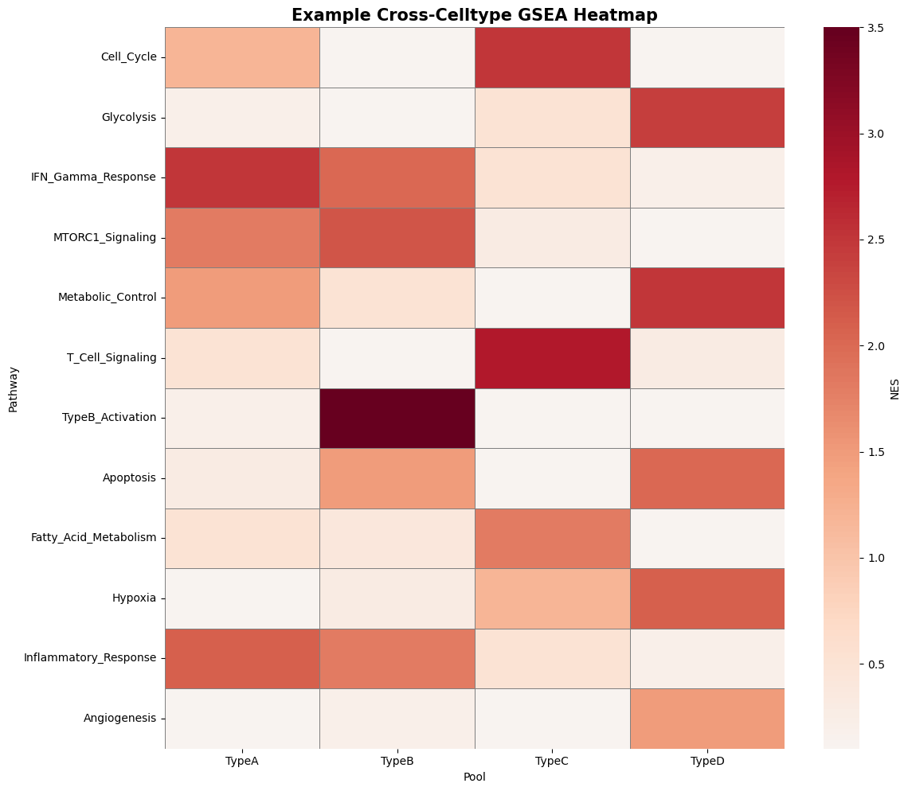
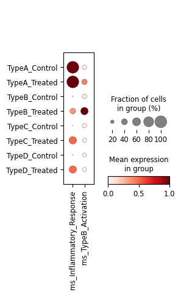

[1]:
import warnings
warnings.filterwarnings('ignore')
import pandas as pd
pd.options.mode.chained_assignment = None
sctrial: Comprehensive Workflow Tutorial
Trial-Aware Single-Cell Inference
This notebook provides an in-depth demonstration of the sctrial package capabilities. We use a synthetic dataset designed to mirror a complex clinical trial with:
Multiple participants and visits (Longitudinal)
Treatment and Control arms (Randomized)
Multiple cell types (Stratified)
Known biological signals (Validation)
[2]:
import sctrial as st
import numpy as np
import pandas as pd
import matplotlib.pyplot as plt
import seaborn as sns
from anndata import AnnData
from scipy import sparse
# Set seed for reproducibility
np.random.seed(42)
def generate_clustered_data(n_obs, n_vars, n_clusters=4):
# Simulate 2D UMAP-like clusters with 4 distinct groups
from sklearn.datasets import make_blobs
centers = [[0, 0], [10, 10], [15, 0], [0, 15]]
X_umap, y = make_blobs(n_samples=n_obs, centers=centers, cluster_std=1.2, random_state=42)
# Map clusters to cell types
celltypes = np.array(["TypeA", "TypeB", "TypeC", "TypeD"])[y]
# Generate expression data that correlates with clusters
X = np.random.poisson(0.1, size=(n_obs, n_vars)).astype(float)
for i in range(n_clusters):
mask = (y == i)
# Cluster-specific markers (5 genes each)
X[mask, i*10:(i*10)+5] += 3.0
return X, X_umap, celltypes
1. Data Generation: Building a Virtual Clinical Trial
We create a dataset with 30 participants, 2 visits (Baseline, Followup), and 2 arms (Treated, Control). We also simulate two cell types (TypeA, TypeB) with distinct clusters and response profiles.
[3]:
n_participants = 30
n_genes = 200
visits = ["Baseline", "Followup"]
arms = ["Treated", "Control"]
rows = []
for i in range(n_participants):
arm = "Treated" if i < n_participants // 2 else "Control"
for v in visits:
# 60 cells per participant per visit
for _ in range(60):
rows.append({
"participant_id": f"P{i}",
"visit": v,
"arm": arm,
"age": 45 + (i % 5) * 4,
"batch": f"Batch_{i % 3}"
})
obs = pd.DataFrame(rows)
X, X_umap, celltypes = generate_clustered_data(len(obs), n_genes)
obs["celltype"] = celltypes
# --- Inject Signals ---
# 1. Global Treatment Effect (TypeA & TypeB) in Genes 0-4
# We'll make it very strong to ensure clear p-values and GSEA signal
treated_followup = (obs["arm"] == "Treated") & (obs["visit"] == "Followup")
X[treated_followup, :5] += 6.0
# 2. Cell-type Specific Effect (TypeB only) in Genes 5-9
typeB_treated_followup = treated_followup & (obs["celltype"] == "TypeB")
X[typeB_treated_followup, 5:10] += 10.0
# 3. Add more interesting signals for GSEA (TypeC and TypeD)
typeC_treated_followup = treated_followup & (obs["celltype"] == "TypeC")
X[typeC_treated_followup, 20:25] += 8.0
typeD_treated_followup = treated_followup & (obs["celltype"] == "TypeD")
X[typeD_treated_followup, 30:35] += 7.0
# 3. Abundance Shift: Increase in TypeA in Treated Followup
# We'll adjust the 'celltype' labels for a subset of cells to simulate a composition shift
mask_shift = (obs["arm"] == "Treated") & (obs["visit"] == "Followup") & (obs["celltype"] == "TypeB")
indices_to_shift = obs[mask_shift].sample(frac=0.4, random_state=42).index
obs.loc[indices_to_shift, "celltype"] = "TypeA"
adata = AnnData(X=sparse.csr_matrix(X), obs=obs)
adata.obsm["X_umap"] = X_umap
adata.var_names = [f"Gene{i}" for i in range(n_genes)]
adata.layers["counts"] = adata.X.copy()
print(f"Created AnnData with {adata.n_obs} cells and {adata.n_vars} genes.")
print(f"Arms: {adata.obs['arm'].unique()}")
print(f"Visits: {adata.obs['visit'].unique()}")
print(f"Cell types: {adata.obs['celltype'].unique()}")
Created AnnData with 3600 cells and 200 genes.
Arms: ['Treated' 'Control']
Visits: ['Baseline' 'Followup']
Cell types: ['TypeA' 'TypeB' 'TypeC' 'TypeD']
2. Defining the Trial Design
The TrialDesign object centralizes your study metadata.
[4]:
design = st.TrialDesign(
participant_col="participant_id",
visit_col="visit",
arm_col="arm",
arm_treated="Treated",
arm_control="Control",
celltype_col="celltype",
baseline_visit="Baseline",
followup_visit="Followup"
)
# Validate consistency
design.validate(adata)
print("Trial design validated successfully.")
Trial design validated successfully.
3. Preprocessing & Module Scoring
We normalize the data and aggregate gene signals into functional “Module Scores”.
[5]:
# Normalization: log1p(CPM)
adata = st.add_log1p_cpm_layer(adata, counts_layer="counts", out_layer="log1p_cpm")
# Define biological pathways
gene_sets = {
"Inflammatory_Response": ["Gene0", "Gene1", "Gene2"],
"TypeB_Activation": ["Gene5", "Gene6", "Gene7"],
"Metabolic_Control": ["Gene20", "Gene21", "Gene22"]
}
# Compute module scores using the 'zmean' method (z-score genes across cells then mean)
adata = st.score_gene_sets(adata, gene_sets, layer="log1p_cpm", method="zmean", prefix="ms_")
# Preview the new scores in metadata
print("Added module scores:", [c for c in adata.obs.columns if c.startswith("ms_")])
Added module scores: ['ms_Inflammatory_Response', 'ms_TypeB_Activation', 'ms_Metabolic_Control']
4. Difference-in-Differences (DiD) Analysis
Testing the Primary Treatment Effect
We test the “divergence” between arms from Baseline to Followup.
[6]:
# Global DiD (Aggregated to participant-visit level)
did_res = st.did_table(
adata,
features=["ms_Inflammatory_Response", "ms_TypeB_Activation", "ms_Metabolic_Control"],
design=design,
visits=("Baseline", "Followup"),
aggregate="participant_visit",
covariates=["age"] # Control for age
)
print("--- Global DiD Results ---")
print(st.summarize_did_results(did_res))
display(did_res)
--- Global DiD Results ---
## Trial-Aware DiD Summary
Total features tested: 3
Significant (p < 0.05): 2
Significant (FDR < 0.05): 2
### Top Upregulated Features (by p-value):
- ms_Inflammatory_Response: beta=2.194, p=7.37e-89
- ms_TypeB_Activation: beta=2.211, p=7.39e-27
- ms_Metabolic_Control: beta=0.060, p=9.44e-01
### Top Downregulated Features (by p-value):
- None
| beta_DiD | se_DiD | p_DiD | beta_time | p_time | n_units | feature | FDR_DiD | |
|---|---|---|---|---|---|---|---|---|
| 0 | 2.193640 | 0.109762 | 7.373597e-89 | 0.001254 | 0.988676 | 30 | ms_Inflammatory_Response | 2.212079e-88 |
| 1 | 2.211331 | 0.206097 | 7.394546e-27 | 0.005024 | 0.960072 | 30 | ms_TypeB_Activation | 1.109182e-26 |
| 2 | 0.059613 | 0.844913 | 9.437517e-01 | 0.228786 | 0.692017 | 30 | ms_Metabolic_Control | 9.437517e-01 |
Robust Inference: Wild Cluster Bootstrap
For small sample sizes or non-normal distributions, we use bootstrapping.
[7]:
print("Running DiD with Wild Cluster Bootstrap (Rademacher)...")
did_boot = st.did_table(
adata,
features=["ms_TypeB_Activation"],
design=design,
visits=("Baseline", "Followup"),
use_bootstrap=True,
n_boot=199 # Using small B for demo speed
)
print(did_boot[["feature", "beta_DiD", "p_DiD"]])
Running DiD with Wild Cluster Bootstrap (Rademacher)...
feature beta_DiD p_DiD
0 ms_TypeB_Activation 2.211331 0.0
5. Stratified Analysis
Treatment Effects by Cell Type
Biological responses are often cell-type specific. did_table_by_celltype automates this stratification.
[8]:
strat_res = st.did_table_by_celltype(
adata,
features=["ms_Inflammatory_Response", "ms_TypeB_Activation"],
design=design,
visits=("Baseline", "Followup")
)
print("--- Stratified DiD Results ---")
display(strat_res.sort_values(["celltype", "p_DiD"]))
--- Stratified DiD Results ---
| beta_DiD | se_DiD | p_DiD | beta_time | p_time | n_units | feature | FDR_DiD | celltype | FDR_DiD_stratified | |
|---|---|---|---|---|---|---|---|---|---|---|
| 0 | 2.136460 | 0.332688 | 1.346678e-10 | 0.017933 | 0.928988 | 30 | ms_TypeB_Activation | 2.693355e-10 | TypeA | 2.154684e-10 |
| 1 | 1.857935 | 0.318681 | 5.539986e-09 | 0.127482 | 0.422528 | 30 | ms_Inflammatory_Response | 5.539986e-09 | TypeA | 7.386648e-09 |
| 2 | 2.240588 | 0.061989 | 4.515681e-286 | 0.051950 | 0.324460 | 30 | ms_TypeB_Activation | 9.031362e-286 | TypeB | 3.612545e-285 |
| 3 | 2.263175 | 0.080074 | 9.707890e-176 | 0.007829 | 0.912217 | 30 | ms_Inflammatory_Response | 9.707890e-176 | TypeB | 2.588771e-175 |
| 4 | 2.239978 | 0.073411 | 1.760643e-204 | 0.007608 | 0.896277 | 30 | ms_Inflammatory_Response | 3.521286e-204 | TypeC | 7.042572e-204 |
| 5 | -0.575928 | 0.810041 | 4.770927e-01 | 0.041367 | 0.931491 | 30 | ms_TypeB_Activation | 4.770927e-01 | TypeC | 5.452488e-01 |
| 6 | 2.285121 | 0.081235 | 4.223448e-174 | -0.011762 | 0.868449 | 30 | ms_Inflammatory_Response | 8.446896e-174 | TypeD | 8.446896e-174 |
| 7 | -0.318366 | 0.695721 | 6.472358e-01 | -0.221593 | 0.631438 | 30 | ms_TypeB_Activation | 6.472358e-01 | TypeD | 6.472358e-01 |
6. Cell-Type Abundance Analysis
Compositional Shifts
We test if the proportion of specific cell types changes in response to treatment.
[9]:
ab_res = st.abundance_did(
adata,
design=design,
visits=("Baseline", "Followup"),
transform="arcsin_sqrt"
)
print("--- Abundance DiD Results ---")
display(ab_res)
--- Abundance DiD Results ---
| celltype | n_participants | beta_DiD | se_DiD | p_DiD | beta_time | p_time | FDR_DiD | |
|---|---|---|---|---|---|---|---|---|
| 0 | TypeB | 30 | -0.117836 | 0.033426 | 0.001476 | -0.017852 | 0.456384 | 0.005904 |
| 1 | TypeA | 30 | 0.070467 | 0.034385 | 0.049899 | 0.003869 | 0.874698 | 0.099798 |
| 2 | TypeD | 30 | 0.015335 | 0.036440 | 0.677085 | 0.003974 | 0.878545 | 0.720661 |
| 3 | TypeC | 30 | 0.011377 | 0.031497 | 0.720661 | 0.012579 | 0.576699 | 0.720661 |
7. GSEA Analysis
Trial-Aware Pathway Enrichment
Instead of ranking genes by simple expression, we rank them by their DiD t-statistic.
[10]:
print("Running GSEA on Trial-Aware Rankings...")
# 100 permutations is enough for a demo
# Define more pathways for the heatmap
gene_sets_ext = {
**gene_sets,
"T_Cell_Signaling": [f"Gene{i}" for i in range(20, 25)],
"B_Cell_Activation": [f"Gene{i}" for i in range(30, 35)],
"IFN_Response": [f"Gene{i}" for i in range(40, 45)],
"Metabolic_Shift": [f"Gene{i}" for i in range(50, 55)],
"Cell_Cycle": [f"Gene{i}" for i in range(60, 65)],
"Apoptosis": [f"Gene{i}" for i in range(70, 75)]
}
gsea_res = st.run_gsea_did(
adata,
gene_sets=gene_sets_ext,
design=design,
visits=("Baseline", "Followup"),
rank_by="tstat",
permutation_num=100,
min_size=1,
seed=42
)
print("--- GSEA Top Terms ---")
display(gsea_res.sort_values("NES", ascending=False))
Running GSEA on Trial-Aware Rankings...
--- GSEA Top Terms ---
| Name | Term | ES | NES | NOM p-val | FDR q-val | FWER p-val | Tag % | Gene % | Lead_genes | |
|---|---|---|---|---|---|---|---|---|---|---|
| 0 | prerank | Inflammatory_Response | 0.989848 | 1.512642 | 0.0 | 0.0 | 0.0 | 3/3 | 2.50% | Gene0;Gene2;Gene1 |
| 1 | prerank | T_Cell_Signaling | 0.94359 | 1.405906 | 0.074627 | 0.21164 | 0.24 | 5/5 | 8.00% | Gene23;Gene24;Gene22;Gene20;Gene21 |
| 2 | prerank | Metabolic_Control | 0.93401 | 1.369347 | 0.166667 | 0.235156 | 0.35 | 3/3 | 8.00% | Gene22;Gene20;Gene21 |
| 3 | prerank | TypeB_Activation | 0.969543 | 1.36596 | 0.04 | 0.179894 | 0.36 | 3/3 | 4.50% | Gene7;Gene6;Gene5 |
| 4 | prerank | B_Cell_Activation | 0.923077 | 1.273408 | 0.175439 | 0.358377 | 0.74 | 5/5 | 10.00% | Gene30;Gene33;Gene32;Gene31;Gene34 |
| 6 | prerank | Cell_Cycle | 0.579226 | 0.880693 | 0.636364 | 0.886537 | 1.0 | 3/5 | 24.00% | Gene64;Gene60;Gene62 |
| 7 | prerank | Metabolic_Shift | 0.56781 | 0.776214 | 0.777778 | 0.836483 | 1.0 | 2/5 | 16.00% | Gene51;Gene54 |
| 8 | prerank | Apoptosis | 0.478653 | 0.721838 | 0.712121 | 0.767196 | 1.0 | 3/5 | 37.00% | Gene74;Gene73;Gene72 |
| 5 | prerank | IFN_Response | -0.430175 | -0.894608 | 0.545455 | 0.618619 | 0.888889 | 1/5 | 3.50% | Gene41 |
8. Comprehensive Visualizations
Interaction Plots
Visualize the Divergence between arms.
[11]:
fig, axes = plt.subplots(1, 2, figsize=(12, 5))
st.plot_trial_interaction(adata, "ms_Inflammatory_Response", design, ax=axes[0])
axes[0].set_title("Global Interaction: Inflammatory Response")
st.plot_abundance_interaction(adata, "TypeA", design, ax=axes[1])
axes[1].set_title("Abundance Shift: TypeA Proportion")
plt.tight_layout()
plt.show()

Forest Plots
Compare effect sizes across multiple features or cell types.
[12]:
fig, axes = plt.subplots(1, 2, figsize=(14, 6))
st.plot_did_forest(did_res, title="Module Score Effects", ax=axes[0])
st.plot_did_forest(ab_res, title="Cell Type Proportion Effects", feature_col="celltype", ax=axes[1])
plt.tight_layout()
plt.show()

Within-Arm Longitudinal Analysis (Spaghetti Plots)
Visualize individual participant trajectories.
[13]:
st.plot_within_arm_comparison(
adata,
arm="Treated",
feature="ms_TypeB_Activation",
design=design,
visits=("Baseline", "Followup"),
plot_type="paired"
)
plt.show()

Trial-Aware UMAP Panel
Contextualize expression within the global cell-type landscape.
[14]:
# We already have X_umap from make_blobs, which shows clear clusters.
st.plot_trial_umap_panel(adata, "ms_TypeB_Activation", design)
plt.show()

GSEA Visualizations: Heatmap
[15]:
# Mocking multiple cell type GSEA results for demonstration
# We include 12 pathways and 4 cell types for a comprehensive heatmap
mock_gsea_all = pd.DataFrame({
"Term": ['Inflammatory_Response', 'TypeB_Activation', 'Metabolic_Control', 'T_Cell_Signaling', 'IFN_Gamma_Response', 'Hypoxia', 'Cell_Cycle', 'Apoptosis', 'Angiogenesis', 'Fatty_Acid_Metabolism', 'MTORC1_Signaling', 'Glycolysis'] * 4,
"pool": ["TypeA"] * 12 + ["TypeB"] * 12 + ["TypeC"] * 12 + ["TypeD"] * 12,
"NES": [
2.1, 0.2, 1.5, 0.5, 2.5, 0.1, 1.2, 0.3, 0.1, 0.5, 1.8, 0.2, # TypeA
1.8, 3.5, 0.5, 0.1, 2.0, 0.3, 0.1, 1.5, 0.2, 0.4, 2.2, 0.1, # TypeB
0.5, 0.1, 0.1, 2.8, 0.5, 1.2, 2.5, 0.1, 0.1, 1.8, 0.3, 0.5, # TypeC
0.2, 0.1, 2.5, 0.3, 0.2, 2.1, 0.1, 2.0, 1.5, 0.1, 0.1, 2.4 # TypeD
],
"FDR q-val": [
0.01, 0.8, 0.05, 0.6, 0.001, 0.9, 0.01, 0.8, 0.9, 0.7, 0.01, 0.8,
0.02, 0.001, 0.7, 0.9, 0.01, 0.8, 0.9, 0.01, 0.8, 0.7, 0.001, 0.9,
0.7, 0.9, 0.9, 0.001, 0.7, 0.05, 0.001, 0.8, 0.9, 0.01, 0.7, 0.6,
0.9, 0.9, 0.001, 0.8, 0.9, 0.01, 0.8, 0.01, 0.05, 0.9, 0.8, 0.001
],
"collection": ["Demo"] * 48
})
st.plot_gsea_heatmap(mock_gsea_all, collection="Demo", fdr_thresh=0.1, figsize=(12, 10))
plt.title("Example Cross-Celltype GSEA Heatmap", fontsize=15, fontweight='bold')
plt.show()

Trial Dotplot
Condensed view of expression across arms and cell types.
[16]:
st.plot_trial_dotplot(
adata,
features=["ms_Inflammatory_Response", "ms_TypeB_Activation"],
design=design,
standard_scale="var"
)
plt.show()

9. Conclusion
The sctrial package provides a unified framework for:
Controlling for heterogeneity via participant fixed effects.
Identifying specific responders via Difference-in-Differences.
Validating findings through robust inference and stratified analysis.
Communicating results through high-impact, trial-aware visualizations.
Workflow completed successfully!